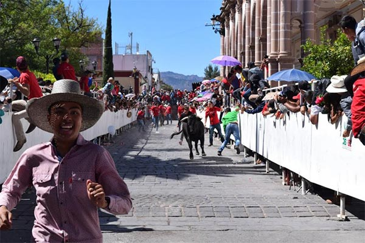
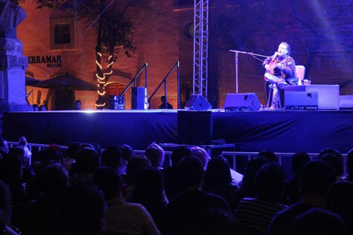
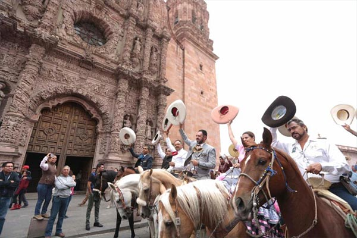

COSTUMBRES DE TlAXCALA
Jerezada
La festividad que se destaca en el mes de febrero es la Jerezada, iniciada en el año
2000. Con el fin de preservar los monumentos y sus admiradas fachadas,
durante algunos años, el espectáculo trasladó su actividad a los entornos de
la plaza de toros local.
Aunque de nueva cuenta retoma las calles de la población para realizarlo y
con ello realzar más aún la imagen de esta bella y alegre localidad, la cual en el
2007 fue distinguida con el nombramiento de Pueblo mágico.

Festival Cultural Zacatecas
Este festival comenzó en el año de 1987, y con el transcurrir de los años se ha
situado como uno de los más importantes del país.
Han sido muchos y afamados los artistas que han conformado la cartelera,
la cual incluye todas las disciplinas del arte. Asimismo las actividades religiosas
de Semana Santa, se suman a las actividades del festival.

Cabalgata turística de la ‘Toma de Zacatecas’
Esta caminata ecuestre lleva una tradición de una década, y regularmente se lleva
acabo los días 21 y 22 del mes de junio.
Dicha caminata sigue la ruta que el ejército de la División del Norte,
encabezado por el General Francisco Villa, trazada en el plan de ataque para
llevar acabo la histórica toma de Zacatecas, del 23 de junio de 1914.

Entre muchas mas costumbres y fiestas populares que ofrece Zacatecas